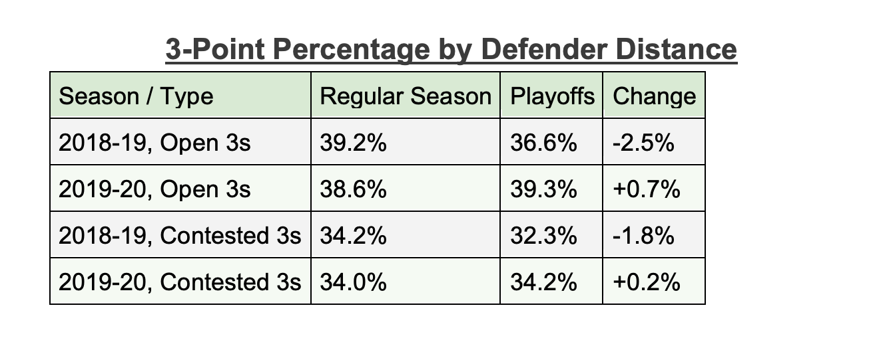

The NBA Bubble and Shooting Percentages
By Kasey Noguchi | November 15, 2020
This 2020 NBA season, 22 out of the 30 teams created a “bubble” in Orlando, Florida to follow regulations during the ongoing pandemic. Due to several different compounding factors, it seemed that a large number of players averaged a higher number of points after March compared to the first half of the NBA season before it was moved to Orlando. This is including a rise in players’ average free throw and three-point percentage as well. With fewer distractions, such as noise level, cheering crowds, and depth perception, in the bubble, players were able to concentrate better without having to worry about any interferences.

Damian Lillard began the 2019-2020 season with an average of 28.9 points per game and after the transition to the bubble, Lillard’s average went up to 37.6 points. Without the loud volume of the crowds, players had fewer distractions and were able to concentrate more on their performance. Several players commented that depth perception made a difference as well. Instead of playing in packed stadiums full of ecstatic fans, teams played in much smaller areas similar to where they held regular practices. Not having to consider depth perception allowed players to have an easier time making shots. Before March, NBA players who took shots from the corner were shooting 38.9 percent inside the bubble, that percentage increased to 42.8.
Similarly, a noticeable amount of players have seen an increase in free-throw percentages as well. Dwight Howard, who is notorious for his poor free-throw shooting, saw an increase from 49.4 percent to 61.8 percent, which is one of the notable increases this season. Without fans, the arena is much quieter and there are no visual distractions that could potentially overstimulate players. In the bubble, all players have “home court advantage” since they practice and play on the same courts, which means they are able to feel more comfortable with the baskets they are shooting on. Overall, free throw percentages rose from 77.1 to 80.6 percent. “I feel like it’s a hooper’s gym,” Devin Booker explains to The Ringer. “It’s easier to shoot in here with [better] depth perception. I love the setup that they have for us. There’s not much more that comes with it beyond the game of basketball.” Offensive statistics have been much higher from inside the NBA bubble compared to the beginning of the season - including average points, free throw and three-point percentages, etc.